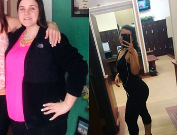

TYLKO U NAS : Nowe „musujące tabletki wyszczuplające” przodują we wszystkich rankingach popularności w naszym kraju. Matka dwójki dzieci z Warszawy sprawdziła ten produkt i schudła 20 kg w 4 tygodnie!
Alicja przygotowała dla nas sprawozdanie z tego spektakularnego odchudzania. Specjalnie dla swoich czytelników redakcja postanowiła przyjrzeć się z bliska nowej diecie z i dowiedzieć się, czy rzeczywiście jest tak skuteczna, jak mówią.

Dziennikarka, Alicja,
sprawdza niezwykłą metodę na odchudzanie, która zyskuje na popularności w naszym kraju.
(Zdrowie Mamy).
W ciągu ostatnich trzech miesięcy nasi czytelnicy szaleli na punkcie nowej sensacji w Internecie – naturalnego środka o nazwie . Pomógł tysiącom kobiet z całego świata drastycznie zredukować wagę i usunąć tłuszczyk z brzucha. Ten rewolucyjny sposób na odchudzanie nazywany „Świętym Graalem odchudzania” stał się już bohaterem kilku programów telewizyjnych. Okazało się, że jest w 100% naturalny, a przy tym dostępny w naprawdę przystępnej cenie.
Nawet zagraniczni celebryci tacy jak Vicky Pattison, Jessica Simpson, Ricky Gervais czy Jonah Hill byli w stanie schudnąć, stosując tylko te tabletki musujące. Ich fantastyczne działanie zostało potwierdzone wynikami badań klinicznych. Nie tylko szybko spalają wszelki nagromadzony tłuszcz, ale przy tym oczyszczają także organizm z toksyn, odmładzają oraz znacznie przyspieszają metabolizm. Wszystko to ma na celu zapobiegać gromadzeniu się złogów tłuszczu w organizmie w przyszłości.
A jak pokazują nasze testy różnych metod odchudzających, ten proces to generalnie trudne zadanie, a efekty często są znikome lub tymczasowe.
Jednakże szeroko zakrojone badania oraz wywiady z osobami, które stosowały , pokazują, że ten środek to naprawdę przełom w dietetyce. Czytaj dalej i dowiedz się, dlaczego ten specjalny numer poświęciliśmy właśnie tej metodzie.
Najnowsze wiadomości

Wiele osób nie chudnie, ponieważ w ich diecie brakuje pewnego składnika!
W przeciwieństwie do nowoczesnych suplementów jest w stanie zdziałać cuda w zakresie redukcji wagi i korekcji figury. Połącznie stosowania tego produktu wraz ze zdrową dietą może sprawić, że uda ci się schudnąć nawet 20 kg w 2 miesiące.
Tabletki musujące zawierają magnez, l-glutaminę, witaminy z grupy B oraz potas.
Co mówią inni
 Wszyscy znajomi mówili mi o . Miałam problemy z nadwagą od czasów szkolnych, więc możecie
sobie wyobrazić, ile lat marzyłam o tym, by czuć się i wyglądać tak dobrze jak moi szczupli znajomi.
Za ich namową wypróbowałam i nigdy nie zamienię
tego produktu na żaden inny. Dzięki po raz
pierwszy udało mi się schudnąć 12 kg i teraz moja figura jest po prostu idealna. Kocham swoje nowe
ciało!
Aleksandra Makowiecka Czytaj dalej >>>

Kiedy skończyłem 20 lat, zacząłem mieć problemy z nadwagą. Ze szczupłego,
przystojnego faceta, zrobił się ze mnie tłuścioch. W końcu zacząłem chodzić na siłownię, a trener
zalecił mi pić dużo wody i stosować dwa razy
dziennie. Efekty są po prostu oszałamiające: minus 14 kg w 4 tygodnie. Dziękuję bardzo!
Adrian Milewski Czytaj dalej >>>

Jako matka trójki dzieci, codziennie muszę dzielić czas pomiędzy pracę, dzieci i
milion innych rzeczy...
Pewnego razu znajoma dała mi . Naprawdę zaczęłam chudnąć już w ciągu pierwszego
tygodnia. Miesiąc później nie mogłam uwierzyć, że mam wreszcie figurę, o jakiej zawsze marzyłam.
Dziękuję za wszystko, Jesteś prawdziwym cudem!
Ela Czytaj dalej >>>

Wypróbuj teraz!


Tutaj schudłam 13 kg! – mówi Beata
Kup
Naszym zdaniem stosowanie większości diet kończy się niepowodzeniem, ponieważ nakładają nierealistyczne restrykcje na nasz sposób życia. Jedne mówią, że mamy jeść dużo białka, inne podkreślają, jak ważne są węglowodany. W obu przypadkach wprowadzamy istotne zmiany w naszych nawykach żywieniowych.
W tym specjalnym wydaniu bardzo dokładnie przyjrzymy się tej niezwykle skutecznej metodzie odchudzającej, która nie wymaga stosowania diety ani uprawiania sporu, a co najważniejsze, nie szkodzi zdrowiu. Wierzymy, że to prawdziwa rewolucja w świecie odchudzania.
Być może już słyszeliście o tych słynnych tabletkach musujących w telewizji. Zawierają magnez, l-glutaminę, witaminy z grupy B oraz potas.
Te wszystkie składniki dobrano z myślą o spalaniu tłuszczu nagromadzonego w nadmiarze oraz przyspieszaniu metabolizmu.
Badania przeprowadzone w prestiżowym instytucie badawczym UCLA w Los Angeles (w USA) wykazały, że tabletki musujące stosowane regularnie mogą przyspieszyć metabolizm oraz zwiększyć zdolność organizmu do spalania tłuszczu o 318%.
Jednakże problem polega na tym, że po sukcesie na rynku pojawiło się mnóstwo podróbek, które są całkowicie nieskuteczne w porównaniu do oryginału.
Lecz skuteczność oryginalnych tabletek pod wieloma względami przekroczyła nasze najśmielsze oczekiwania. Osoby, które stosowały , były w stanie znacznie schudnąć, a przy tym czuły, że mają więcej energii i ochoty do działania. Jeśli jednak sceptycznie podchodzisz do tych rewelacji, to nie tylko ty. My też mieliśmy wątpliwości, kiedy po raz pierwszy usłyszeliśmy o tej sensacyjnej metodzie odchudzającej i nie od razu uwierzyliśmy w jej skuteczność.
Ale kiedy uznaliśmy, że ten ogólny trend zasługuje na naszą uwagę, zaczęliśmy czytać historie osób, które schudły dzięki . Interesował na przede wszystkim fakt, że te osoby nie zmieniły swojego stylu życia.


Jedna z naszych czytelniczek, Maria z Poznania, twierdzi, że schudła ponad 20 kg w ciągu jedynie 5 tygodni dzięki musującym tabletkom . Na swoim blogu napisała:
„Nie mogłam uwierzyć, jakie to było proste. Nie zmieniłam swoich nawyków, a tłuszcz topniał jak rozgrzane masło. Kocham ten produkt! Wreszcie znalazłam środek, który działa!”

Inny komentarz od Julii
Raz wybrano mnie do wypróbowania tabletek musujących , ponieważ postanowiłam schudnąć ponad 10 kg przed ślubem, który
miał się odbyć za 3 miesiące. Przysłali mi kurację i
otrzymałam ją w ciągu kilku dni.
Miałam pewność, że
zadziała, ponieważ uzyskał dobre wyniki w testach klinicznych oraz aprobatę laboratoriów badawczych
z uwagi na doskonałą jakość i wymagania w zakresie kontroli. Poinformowano mnie, że to jeden z
najbardziej skoncentrowanych i czystych produktów na odchudzanie na rynku.
W wyniku badań naukowych wykazano, że
- normalizuje poziom hormonów,
- reguluje procesy metaboliczne, wzmacnia skórę, włosy i paznokcie,
- reguluje metabolizm, sprzyja lepszemu wchłanianiu składników odżywczych,
- obniża poziom cholesterolu, normuje pracę przewodu pokarmowego,
- usuwa toksyny, spala tłuszcz i pobudza procesy regeneracji tkanek.
Piłam dwa razy dziennie, wcześniej rozpuszczając te tabletki w wodzie, przez około miesiąc.
Moje wyniki : Schudłam ponad 13 kg w ciągu miesiąca, co oznacza, że zmalałam o 3 rozmiary. Mogłabym płakać z radości...

Pierwszy tydzień:
Po pierwszym tygodniu stosowania tabletek musujących byłam zaskoczona tym, jak szybko zaczęły działać. Miałam też więcej energii i nieomal nie chciało mi się jeść – hamuje apetyt, w tym na słodycze.
Czułam się wyśmienicie.
A co najważniejsze, nie zmieniłam w swoim codziennym życiu absolutnie nic. Siódmego dnia weszłam na wagę i nie mogłam uwierzyć własnym oczom. Schudłam 5 kg! Ale starałam się nie popadać w zbytni entuzjazm, bo powiedziano mi, że pierwsze co środek eliminuje, to nadmiar płynów w organizmie. Postanowiłam sprawdzić, co stanie się potem z moją waga.
Drugi tydzień:
W ciągu drugiego tygodnia czułam, że mam jeszcze więcej energii i dużo lepszy nastrój. Kolejną zaletą był fakt, że zaczęłam lepiej sypiać i nie budziłam się już w środku nocy. Poza tym zostało mi do zrzucenia już tylko 3 kg, bo w przeciągu zaledwie 2 tygodni, schudłam 7 kg. Wtedy zaczęło docierać do mnie, że to nie tylko sprytny marketing, ale naprawdę skuteczny środek.
Trzeci tydzień:
Po 3 tygodniach rozwiały się moje wszelkie wątpliwości. Schudłam kolejne 3 kg. Olśniło mnie – pozbyłam się wszystkich niechcianych kilogramów! Miałam też mnóstwo sił, choć zwykle pod koniec 3 tygodnia odchudzania ciało jest wykończone, ale z było na odwrót, stało się właśnie silniejsze. Inny pozytywny efekt: procesy trawienne zaczęły przebiegać sprawniej i zniknęła opuchlizna.
Czwarty tydzień:
Po czwartym tygodniu efekty były niewiarogodne, schudłam 12 kg w miesiąc dzięki . To doprawdy imponujące wyniki. Wszyscy z redakcji Zdrowia Mamy mi gratulują i żałują, że sami nie wzięli udziału w tym eksperymencie. Ja, oczywiście, nie miałam ogromnej nadwagi, ale byłam bardzo szczęśliwa, że udało mi się znacznie schudnąć i zyskać więcej energii.
Naturalnie będę nadal brać przez jakiś czas, bo środek ten zawiera wiele antyoksydantów i witamin, które opóźniają proces starzenia się i sprawiają, że skóra pięknie lśni.
W moim nowym szczupłym ciele czuję się absolutnie szczęśliwa.
A suknia
ślubna świetnie na mnie leży!

Schudłam 12 kg w 4 tygodnie bez specjalnych diet ani ćwiczeń.
Podsumowując, jeśli nadal macie wątpliwości, co do skuteczności musicie spróbować uwierzyć: nasz test pokazał, że te wyniki są realne. Redakcja Zdrowia Mamy sprawdza ponad 100 diet rocznie i nawet jeśli na początku wątpiliśmy, szybko przekonaliśmy się, że naprawdę działa. Po naszym teście z przyjemnością obwieszczamy, że zakończył się powodzeniem.
WAŻNE : * W trakcie badań klinicznych wykazano, że dla uzyskania podobnych efektów, produkt należy stosować REGULARNIE .

50% zniżki
dla naszych czytelników!
50% zniżki!
Skorzystaj z naszego EKSKLUZYWNEGO LINKU i otrzymaj rabat już dziś!
Zamów teraz! Drogie panie, nie często piszemy tego typu sprawozdania, ale ten
produkt jest zbyt dobry, by ukrywać go przed ludźmi.
Wypróbujcie i powiedzcie nam, co o nim
sądzicie!
Ciekawi nas wasza opinia!
Liczba produktów objętych promocją jest ograniczona. Nadal dostępne są zniżki
Komentarze:
Eliza
Napisane 1 godzinę temu
Słyszałam o tym produkcie w telewizji, ale nie wiedziałam, gdzie można go kupić. Na szczęście przypadkiem natknęłam się na tę stronę, gdzie jeszcze oferują zniżkę. Przynajmniej nie muszę płacić całej kwoty, jeśli nie zadziała. Choć i tak mam nadzieję, że dzięki niemu schudnę :))
Alicja
Napisane 1 godzinę temu
Ciągle odkładałam odchudzanie na później, ale dziś zamówiłam te tabletki musujące . Dzięki za wsparcie! Teraz dla odwagi zrobię też 30 przysiadów ;)
Jurek Truszkowski
Napisane 2 godziny temu
Cześć wszystkim! Widziałem te tabletki musujące w telewizji i zamówię, dopóki jeszcze trwa promocja. Ale proszę, powiedzcie, czy ten produkt działa też na mężczyzn? Nie zapomnijcie o nas następnym razem, haha!
Jolanta
Napisane 2 godziny temu
Mój mąż zamówił i przetestował ten produkt , dzięki.
Małgorzata
Napisane 2 godziny temu
Moja mama dowiedziała się o tym produkcie w pracy. Myślę, że dobrze działa
Ania M
Napisane 3 godziny temu
Zamówiłam te tabletki musujące 3 tygodnie temu, choć były wtedy prawie wyprzedane. Ale kiedy już je dostałam, byłam świadkiem, jak zdziałały cuda. Nie sądziłam nawet, że naturalne środki mogą być tak skuteczne.
Martyna
Napisane 3 godziny temu
Naprawdę jest w 100% naturalny? Jeśli tak, to też wypróbuję, nie biorę żadnej chemii ani leków
Marek D.
Napisane 4 godziny temu
Zacząłem stosować te tabletki musujące ! Minął dopiero tydzień, ale naprawdę mam więcej energii i ochoty na ruch
Laura
Napisane 4 godziny temu
Często kupuję różne rzeczy przez Internet i nie mogę uwierzyć, że wcześniej nie słyszałam o . Co za wspaniała historia! Dzięki.
Elwira
Napisane 5 godzin temu
Nawet nie przypuszczałam, że można mieć takie wyniki! Pytałam o ten środek ze względu na wasz link!
Karolina
Napisane 5 godzin temu
Nie chcę przegapić tej oferty! Wyślijcie mi link, proszę
Izabela Damięcka
Napisane 5 godzin temu
Kup od oficjalnego producenta tutaj , podróbki wcale nie zadziałają